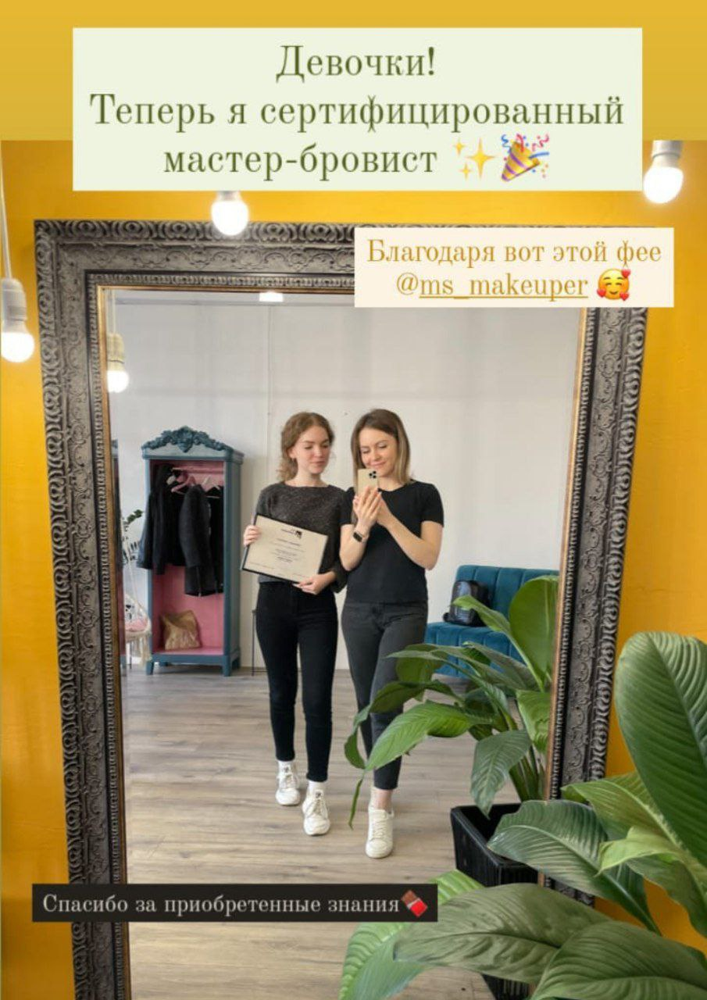
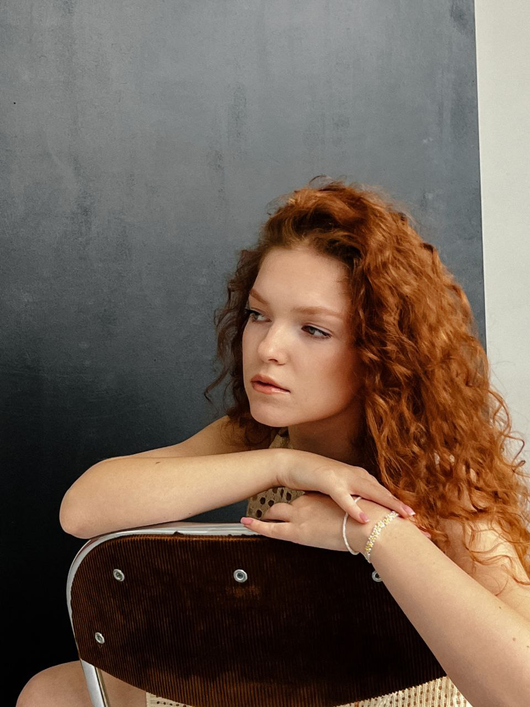
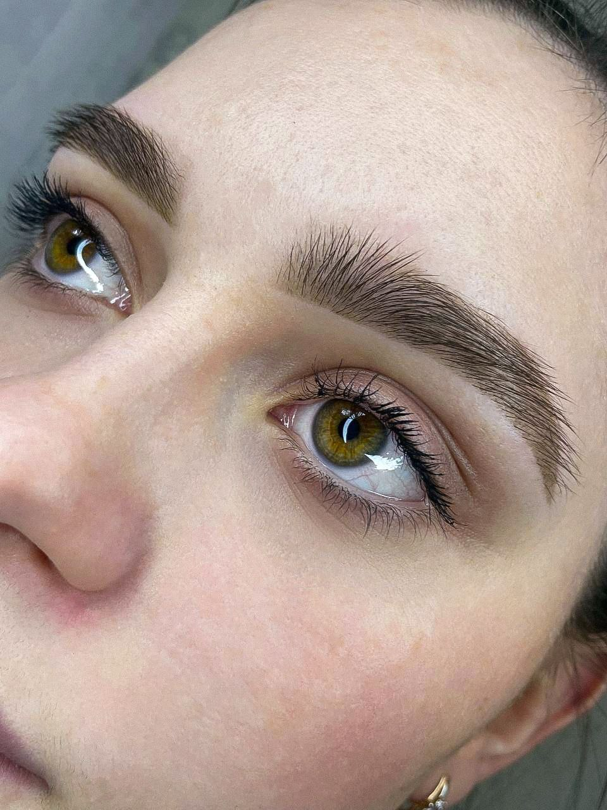
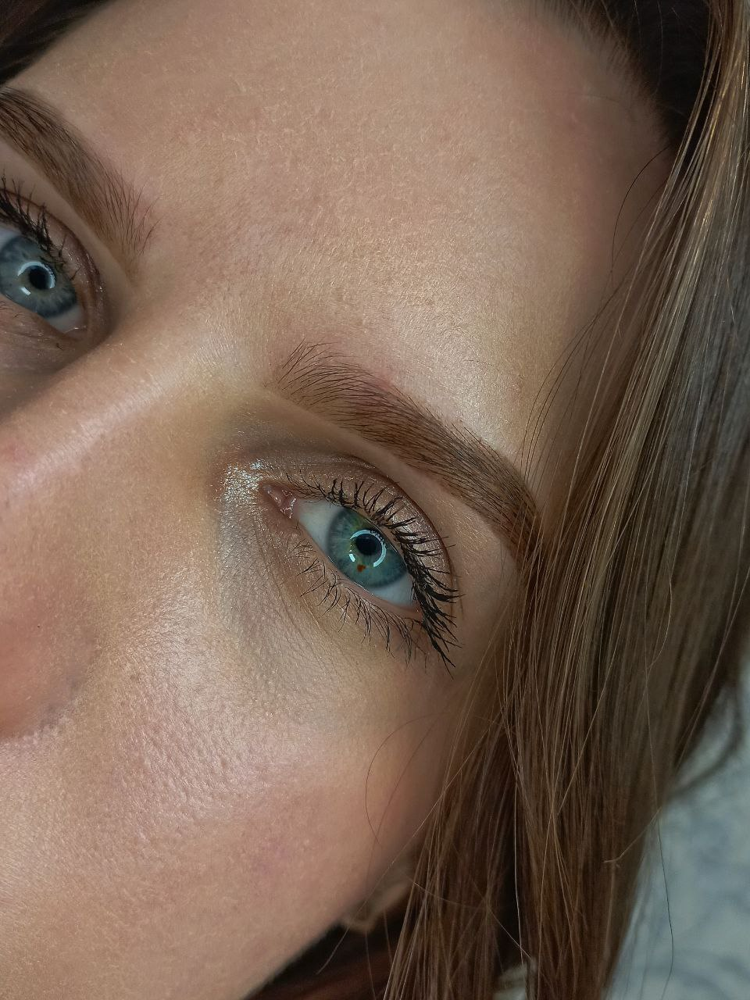
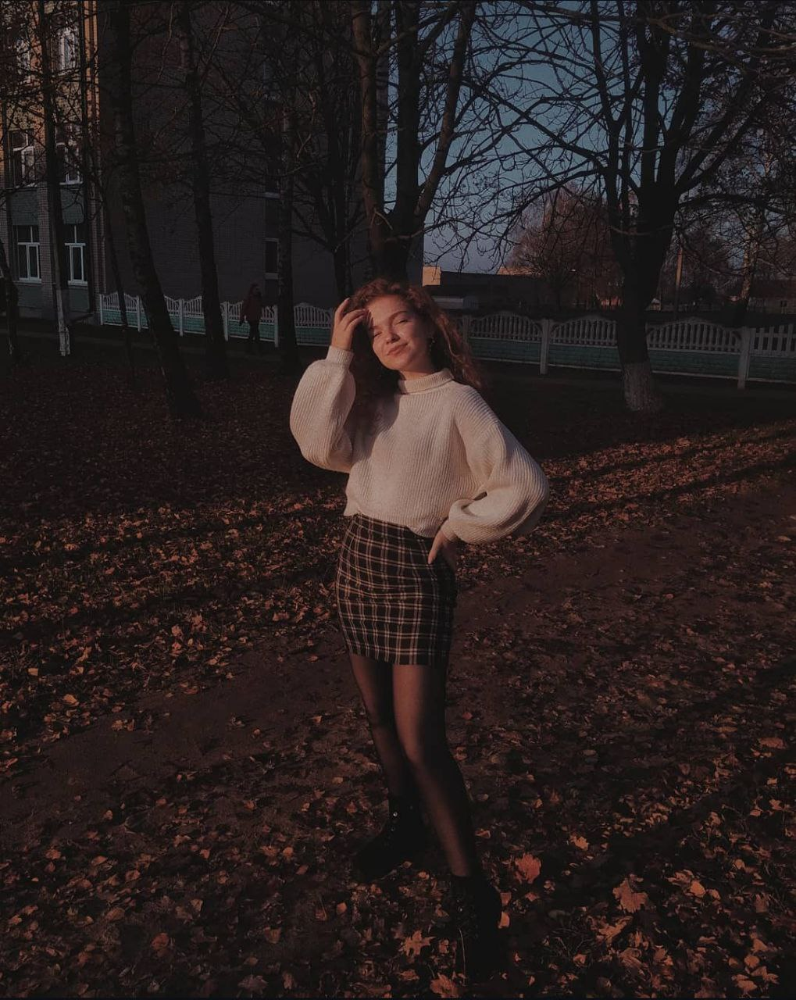
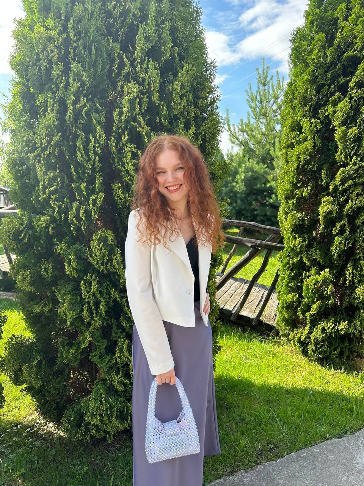

Мой сайт о хобби
Привет! Я мастер бровист с 3х летним стажем! Также я обожаю рукоделие. Шитье, вязание и бисероплетение — это то, что меня вдохновляет.
С детства я увлекалась творчеством и всегда искала способы выразить свои мысли и чувства через искусство.
Мои хобби
-
Мастер бровист
Я занимаюсь оформлением бровей, и это мое призвание! Каждая пара бровей — это уникальная история, и я стараюсь подчеркнуть индивидуальность каждого клиента.
-
Рукоделие
Я люблю шить, вязать и делать поделки из бисера. В школе я увлекалась рукоделием и до сих пор нахожу время на это увлечение.
Фотографии моих работ:




Правила оформления бровей
| Правило | Описание |
|---|---|
| Форма | Выбор формы бровей должен зависеть от овала лица. |
| Цвет | Цвет бровей должен гармонировать с цветом волос. |
| Уход | Регулярный уход и коррекция — залог красивых бровей. |
| Продукты | Используйте качественные продукты для оформления. |